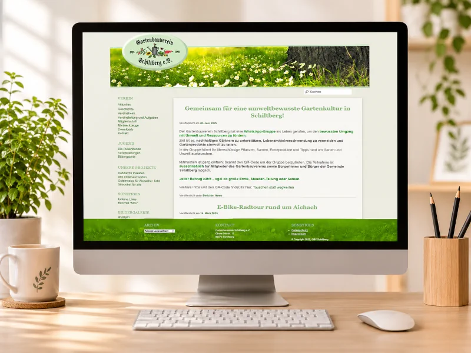
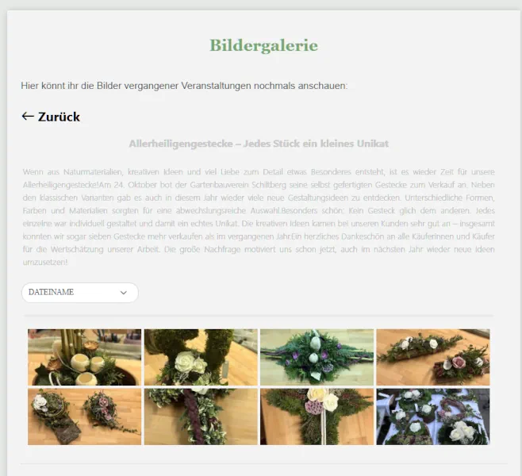

Gartenbauverein Schiltberg
Von der ersten Skizze bis zum fertigen Design.

01 · ÜBERSICHT
Eckdaten zum Projekt
Der Gartenbauverein Schiltberg widmet sich wichtigen Aufgaben im Bereich der Gartenpflege und des Naturschutzes. Um die Vereinsmitglieder, Interessierte und die Öffentlichkeit über die Vereinsaktivitäten zu informieren, wurde eine neue Webseite erstellt. Vor allem soll die Webseite als Plattform dienen, um Informationen über die Vereinsarbeit bereitzustellen und die Gemeinschaft zu stärken. Auch die Jugendarbeit spielt eine zentrale Rolle, da der Verein bestrebt ist, junge Menschen für die Natur und den Gartenbau zu begeistern.
Die Idee dahinter
- Die Idee dahinter war es, eine moderne und benutzerfreundliche Webseite zu erstellen, die die Vereinsarbeit ansprechend präsentiert und die Kommunikation mit den Mitgliedern und der Öffentlichkeit verbessert.
- Farblich sollte sich die Webseite an den Naturfarben des Gartenbaus orientieren, um eine enge Verbindung zur Vereinsidentität herzustellen.
Vom Konzept zur Gestaltung
Recherche und Inspiration
Die Recherchephase umfasste die Analyse von bestehenden Webseiten ähnlicher Vereine, um Best Practices zu identifizieren und Inspiration für das Design zu sammeln. Dabei wurden Aspekte wie Benutzerfreundlichkeit, Informationsstruktur und visuelle Gestaltung berücksichtigt. Gegen Ende der Recherchephase wurden erste Skizzen und einfache Wireframes erstellt, um die Struktur und das Layout der Webseite zu planen. Diese Entwürfe dienten als Grundlage für die anschließende Gestaltung und Umsetzung. Das Vereinslogo wurde mir im Verlauf der Designphase zur Verfügung gestellt, um es in den Designprozess zu integrieren und die visuelle Identität des Vereins zu stärken.
Entwicklung und Umsetzung
- In 2018 wurde aus der Idee eine Webseite, welche erste Informationen über die Vereinsarbeit
bereitstellte. Zudem wurden Informationen zur Vorstandschaft, Mietwerkzeugen und einer
Mitgliedschaft ergänzt.
- In 2019 folgten weitere Inhalte wie Berichte, Projekte sowie eine Bildergalerie mit einem Rückblick
zu vergangenen Verantaltungen.
- In 2022 wurde die Webseite von der Darstellung her überarbeitet und ein neues Farbkonzept erstellt,
um die Inhalte ansprechend zu präsentieren und die Benutzerfreundlichkeit zu verbessern.
Das fertige Design
